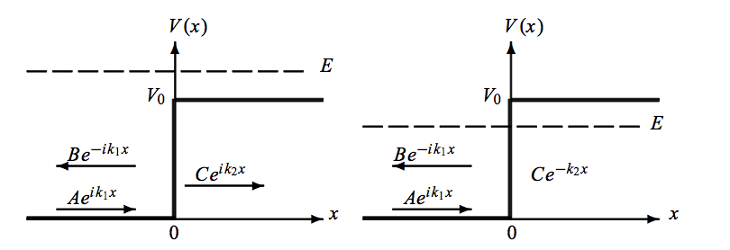

42 The Schrödinger Equation
We have previously considered the wave function \(\psi(x,t)\) and its analogy to plane waves.
\[ \psi \left(x,t\right) = A \cdot \mathrm{e}^{i\left( k x - \omega t\right)} = A \cdot \mathrm{e}^{\frac{i}{\hbar}\left(p x - E t\right)} \mathrm{,} \]
Our considerations revealed that plane waves are good elementary waves but not suitable for describing particles, which are localized in space. In order to describe particles, we have to consider wave packets, which are superpositions of plane waves.
We would like to obtain now a differential equation that governs the time evolution of the wave function \(\psi(x,t)\). We start from the fundamental principle of energy conservation in classical mechanics:
\[E = E_{\text{kin}} + E_{\text{pot}}\]
For a particle of mass m:
\[E = \frac{p^2}{2m} + V(x)\]
To transition to quantum mechanics, we combine the plane wave description of the wave function with the energy conservation principle: If we apply the following differential operators to the wave function \(\psi(x,t)\):
- Energy: \(E \rightarrow i\hbar\frac{\partial}{\partial t}\)
- Momentum: \(p \rightarrow -i\hbar\frac{\partial}{\partial x}\)
we obtain the time-dependent Schrödinger equation in one dimension:
\[i\hbar\frac{\partial}{\partial t}\psi = -\frac{\hbar^2}{2m}\frac{\partial^2}{\partial x^2}\psi + V(x)\psi\]
The Schrödinger equation governs the quantum mechanical behavior of particles through time. The equation balances two key components:
- A kinetic energy component (\(-\frac{\hbar^2}{2m}\frac{\partial^2}{\partial x^2}\psi\)) which determines how the wave packet spreads in space
- A potential energy component (\(V(x)\psi\)) which shows how external forces influence the wave function
While this time-dependent Schrödinger equation appears distinct from traditional wave equations, it serves as a fundamental wave equation for quantum mechanics. It describes how the probability of finding a particle at any point evolves through both space and time.
Why First-Order in Time?
From optics, we are used to the wave equation containing a second order time derivative. This is not existing in the time dependent Schrödinger equations, which is supposed to be a wave equation as well. To understand why the Schrödinger equation contains only a first-order time derivative, let us compare three fundamental equations in physics:
The classical wave equation involves a second time derivative:
\[\frac{\partial^2 \psi}{\partial t^2} = v^2 \frac{\partial^2 \psi}{\partial x^2}\]
The diffusion equation contains a first-order time derivative with real coefficients: \[\frac{\partial \psi}{\partial t} = D \frac{\partial^2 \psi}{\partial x^2}\]
The Schrödinger equation has a first-order time derivative with a complex coefficient: \[i\hbar\frac{\partial \psi}{\partial t} = -\frac{\hbar^2}{2m}\frac{\partial^2 \psi}{\partial x^2}\]
A key requirement for quantum mechanics is the conservation of probability, expressed mathematically as
\[\frac{d}{dt}\int |\psi|^2 dx = 0\].
Let us examine this condition for the Schrödinger equation:
\[\frac{d}{dt}\int |\psi|^2 dx = \int (\psi^* \frac{\partial \psi}{\partial t} + \psi \frac{\partial \psi^*}{\partial t}) dx\]
Using the Schrödinger equation and its complex conjugate:
\[i\hbar\frac{\partial \psi}{\partial t} = -\frac{\hbar^2}{2m}\frac{\partial^2 \psi}{\partial x^2}\] \[-i\hbar\frac{\partial \psi^*}{\partial t} = -\frac{\hbar^2}{2m}\frac{\partial^2 \psi^*}{\partial x^2}\]
The terms cancel exactly, giving \(\frac{d}{dt}\int |\psi|^2 dx = 0\). This conservation of probability does not hold for the diffusion equation, where \(\frac{d}{dt}\int |\psi|^2 dx \neq 0\). Furthermore, a second-order time derivative would not preserve the phase relationships necessary for quantum interference.
The complex nature of the Schrödinger equation, particularly the imaginary unit ‘i’, is therefore essential for maintaining probability conservation, enabling wave-like solutions, and preserving quantum phase relationships.
42.1 Stationary Schrödinger Equation
For states with definite energy (stationary states), we can separate the time dependence using:
\[\psi(x,t) = \psi(x)e^{-iEt/\hbar}\]
Inserting this into the time-dependent Schrödinger equation:
\[i\hbar\frac{\partial}{\partial t}\psi = -\frac{\hbar^2}{2m}\frac{\partial^2}{\partial x^2}\psi + V(x)\psi\]
The time derivative gives \(E\psi\) on the left side, leading to the stationary Schrödinger equation:
\[-\frac{\hbar^2}{2m}\frac{\partial^2}{\partial x^2}\psi + V(x)\psi = E\psi\]
This time-independent equation describes standing wave solutions, similar to standing waves on a string, but in terms of probability distributions. The solutions give us the allowed energy states of the system, explaining why atomic energy levels are quantized. It compares to the Helmholz equation in optics. Therefore, solutions we have found for the Helmholz equation can be applied to the Schrödinger equation as well.
42.2 Solutions of the Schrödinger equation
To solve the stationary Schrödinger equation, we should take care of a number of boundary conditions:
- The wave function \(\psi(x)\) must be continuous.
- The first derivative of the wave function \(\frac{\partial \psi}{\partial x}\) must be continuous.
- The wave function \(\psi(x)\) must be square integrable, i.e. \(\int |\psi(x)|^2 dx < \infty\).
These are the main conditions, which help us to solve the Schrödinger equation. We will now discuss some examples of solutions of the Schrödinger equation.
42.2.1 A potential barrier
Let’s consider a quantum particle encountering a potential step: for \(x < 0\), the potential \(V(x) = 0\), while for \(x ≥ 0\), \(V(x) = E_0\). This is similar to a light wave hitting the interface between two different materials. This simple case of a potential step helps us understand how quantum particles behave differently from classical particles when encountering potential changes. We’ll see in the next lecture how these principles lead to the remarkable phenomenon of quantum tunneling.

To solve this problem, we need to look at two regions separately and match their solutions at \(x = 0\).
42.2.1.1 Region 1 - \(x < 0\):
In the first region where \(V = 0\), the stationary Schrödinger equation is:
\[ - \frac{\hbar^2}{2m} \frac{\partial^2}{\partial x^2} \psi\left( x \right) = E \psi \left( x \right) \]
The solution is a combination of incoming and reflected waves:
\[ \psi_1(x) = A e^{ikx} + B e^{-ikx} \]
where \(k = \sqrt{2mE}/\hbar\)
42.2.1.2 Region 2 - \(x \ge 0\):
In the second region where \(V = V_0\), the Schrödinger equation becomes:
\[ - \frac{\hbar^2}{2m} \frac{\partial^2}{\partial x^2} \psi + V_0 \psi = E \psi \]
The solution here is:
\[ \psi_2(x) = C e^{\alpha x} + D e^{-\alpha x} \]
where \(\alpha = \sqrt{2m(V_0 - E)}/\hbar\)
To connect these solutions, we need two boundary conditions at x = 0:
The wave function must be continuous: \[A + B = C + D\]
Its derivative must be continuous: \[ik(A - B) = \alpha(C - D)\]
42.2.2 The case \(E < V_0\)
In the case \(E<V_0\), \(\alpha\) is real and we set \(C=0\) to prevent \(\psi_2\) diverging as \(x \to \infty\). The boundary conditions give:
\[ \begin{aligned} B & = \frac{i k + \alpha}{i k - \alpha} A\\ D & = \frac{2 i k}{i k - \alpha} A \end{aligned} \]
The wave function in region 1 (\(x < 0\)) is:
\[ \psi_{\mathrm{1}} \left( x \right) = A \left( \mathrm{e}^{+i k x} + \frac{i k + \alpha}{i k - \alpha} \mathrm{e}^{-i k x} \right)\mathrm{.} \]
The reflection coefficient, comparing reflected and initial wave intensities, is:
\[ R = \frac{\left| B \cdot \mathrm{e}^{-i k x} \right|^2}{\left| A \cdot \mathrm{e}^{+i k x} \right|^2} = \frac{\left| i k + \alpha \right|^2}{\left| i k - \alpha \right|^2} = 1 \mathrm{.} \]
This shows total reflection, as expected for \(E < V_0\). However, quantum mechanics reveals that particles still penetrate slightly into region 2 (\(x \ge 0\)).
The probability density \(P(x)\) for \(x > 0\) is:
\[ P \left( x \right) = \left| \psi_2 \left( x \right) \right|^2 = \left| D \cdot \mathrm{e}^{- \alpha x} \right|^2 = \frac{4 k^2}{\alpha^2 + k^2} \mathrm{e}^{-2 \alpha x} = \frac{4 k^2}{k_0^2} \mathrm{e}^{-2 \alpha x} \mathrm{,} \]
where \(k^2 = 2 m E / \hbar^2\) and \(k_0^2 = 2 m V_0 / \hbar^2\). At \(x = 1/(2\alpha)\), the probability density drops to \(1/e\) of its value at \(x=0\), similar to evanescent waves in total internal reflection. This is plotted below and demonstrates that there is still a small probability of finding the particle in region 2, even when \(E < V_0\), which is later the basis for tunneling.

42.2.3 The case \(E > V_0\)
When \(E > V_0\), particles can classically enter region 2 with reduced kinetic energy \(E_{kin} = E - V_0\). In quantum mechanics, α becomes imaginary, so we define a real wave number:
\[ \kappa = i \alpha = \frac{\sqrt{2 m \left( E - V_0 \right)}}{\hbar} \mathrm{.} \]
which means now that \(\alpha = -i\kappa\). The wave function in region 2 becomes:
\[ \psi_2 \left( x \right) = C \cdot \mathrm{e}^{-i \kappa x} + D \cdot \mathrm{e}^{+i \kappa x} \mathrm{,} \]
with \(\psi_1(x)\) unchanged from before.
The boundary conditions at \(x = 0\) require:
\[ \begin{aligned} \psi_{\mathrm{1}} \left( x = 0 \right) & = \psi_{\mathrm{2}} \left( x = 0 \right)\\ \rightarrow A + B & = C +D \end{aligned} \]
\[ \begin{aligned} \frac{\partial}{\partial x} \psi_{\mathrm{1}} \left( x = 0 \right) & = \frac{\partial}{\partial x} \psi_{\mathrm{2}} \left( x = 0 \right)\\ \rightarrow i k \left(A - B \right) & = -i \kappa C + i \kappa D \mathrm{.} \end{aligned} \]
Since no wave reflects from infinity, \(C = 0\). This gives:
\[ \begin{aligned} B & = \frac{k - \kappa}{k + \kappa} A\\ D & = \frac{2 k}{k + \kappa} A\\ \end{aligned} \]
resulting in:
\[ \begin{aligned} \psi_{\mathrm{1}} \left( x \right) & = A \left( \mathrm{e}^{+i k x} + \frac{k - \kappa}{ k + \kappa} \mathrm{e}^{-i k x} \right)\\ \psi_{\mathrm{2}} \left( x \right) & = A \frac{2 k}{ k + \kappa} \mathrm{e}^{+i \kappa x} \mathrm{.} \end{aligned} \]
The plot below shows the wave functions for \(E > V_0\). The wave function in region 2 is oscillatory, indicating that the particle can penetrate the barrier region.
Let’s understand what these coefficients mean physically. The reflection coefficient R represents the probability that an incoming particle will be reflected at the potential barrier. We calculate it by comparing the squared magnitudes of the reflected wave (B) to the incident wave (A):
\[ R = \frac{\left| B \right|^2}{\left| A \right|^2} = \frac{\left| k - \kappa \right|^2}{\left| k + \kappa \right|^2} \]
This expression is analogous to the reflection of light at an interface between two media with different refractive indices (\(k = n_1 k_0\), \(\kappa = n_2 k_0\)):
\[ R = \frac{\left| n_1 - n_2 \right|^2}{\left| n_1 + n_2 \right|^2}\mathrm{.} \]
The transmission coefficient T tells us the probability that a particle will pass through the barrier. Because the particle velocities are different on either side of the barrier (\(v_2/v_1 = k/\kappa\)), we must account for this in our calculation:
\[ T = \frac{v_1 \cdot \left| D \right|^2}{v_2 \cdot \left| A \right|^2} = \frac{4 \kappa k}{\left( k + \kappa \right)^2}\mathrm{.} \]
Since every particle must either reflect or transmit, these probabilities must sum to one:
\[ R + T = 1 \mathrm{.} \]
When the particle’s energy exactly equals the barrier height (\(E = V_0\)), both \(\alpha\) and \(\kappa\) become zero, resulting in total reflection (\(R = 1\)). The plot below shows the trans
We have seen how particles behave quantum mechanically at a potential barrier, showing both wave-like interference and exponential decay properties. These fundamental concepts will form the basis for understanding quantum tunneling, which we’ll explore in our next lecture.